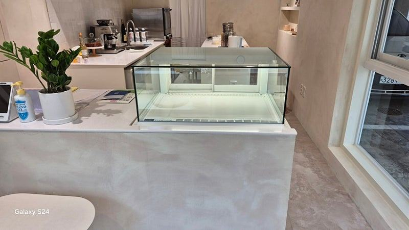
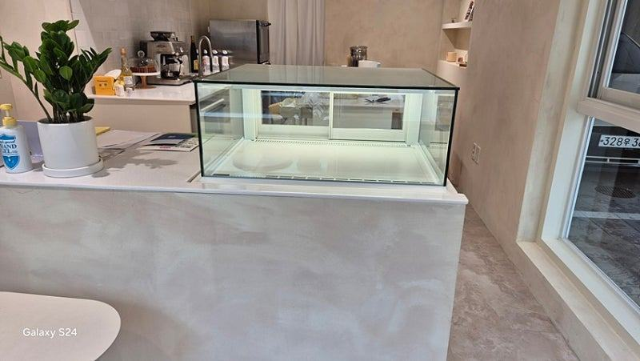
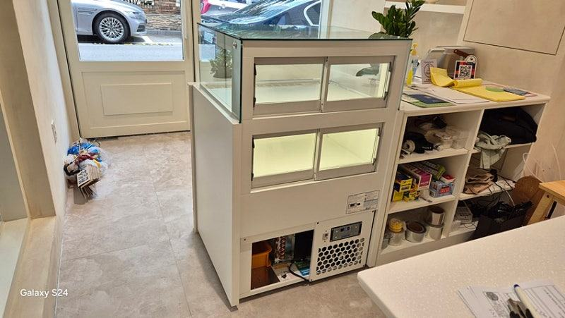
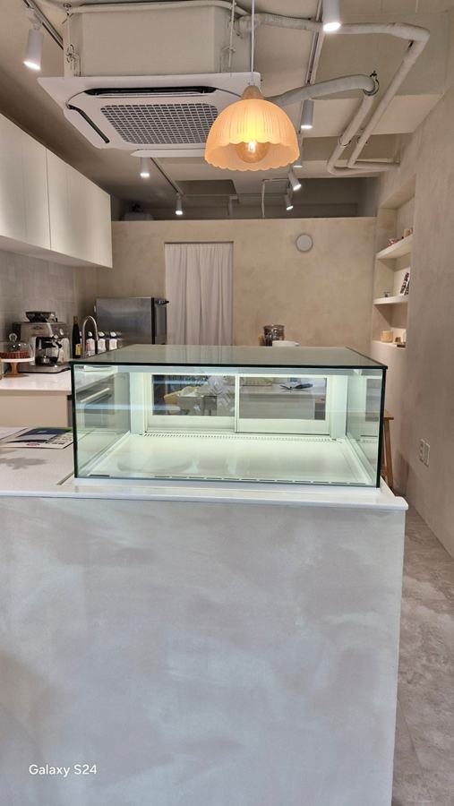
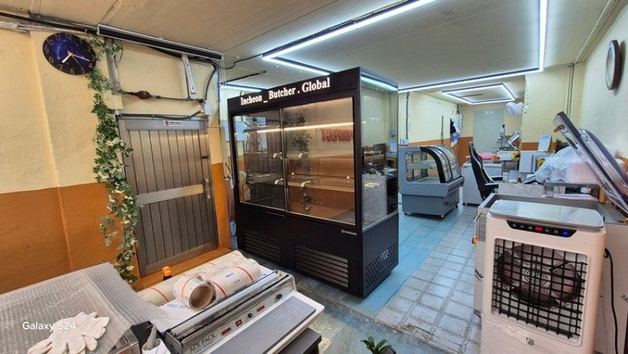
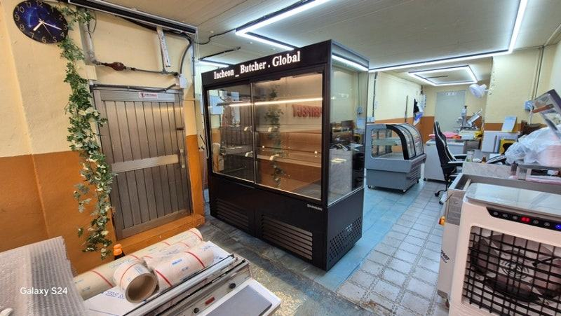

정육쇼케이스
정육쇼케이스 업체 고를 때 상담에서 확인할 것

정육쇼케이스 업체는 첫 상담에서 매장 구조와 작업 동선을 먼저 묻는지, 직접 제작하는 곳인지, 고기 색과 마름을 고려한 냉각·조명 사양을 구체적으로 설명하는지를 보시면 차이가 드러납니다. 여기에 설치 뒤 A/S를 누가 어떻게 하는지까지 확인하면 비교가 끝납니다.
안녕하세요. 정육점과 식육식당에 들어가는 고기 진열 냉장고를 직접 만드는 한성쇼케이스입니다.
정육점 창업을 준비하며 업체 몇 곳에 연락해 보신 사장님들은 "다들 맞춤 제작이 된다고 하는데 뭐가 다른지 모르겠다"고 말씀하십니다.
홈페이지 사진만 보면 비슷비슷해 보이니까요.
정육쇼케이스는 고기 색이 그대로 매출로 이어지는 장비라, 어떤 업체를 고르느냐에 따라 진열대 앞에 선 손님의 첫인상이 달라집니다.
한 번 설치하면 몇 년을 쓰는 설비이기도 하고요.
오늘은 정육쇼케이스 업체를 비교할 때 상담 과정에서 무엇을 물어보고, 어떤 답이 나오면 믿을 만한지 기준을 정리해 드리겠습니다.
1. 매장을 먼저 묻는 업체인지
좋은 업체는 견적부터 내밀지 않고 매장 이야기를 먼저 묻습니다. 정육점은 손님이 서는 앞쪽과 사장님이 고기를 손질하는 뒤쪽 작업대가 붙어 있어, 쇼케이스 높이와 깊이가 작업 동선을 좌우하기 때문입니다.
창으로 햇빛이 얼마나 드는지, 설치 바닥이 평평한지, 전기 배선이 어디로 지나가는지도 성능에 영향을 줍니다.
이런 질문 없이 사이즈만 받아 적는 곳이라면 한 번 더 따져 보세요.
- 작업대 위치와 손질하는 동선을 물어보는지 보세요.
- 채광, 바닥 수평, 전력 위치를 확인하는지 보세요.
- 판매할 부위 구성을 묻는지 확인하세요.
2. 직접 제작하는 곳인지
판매만 하는 곳과 공장을 두고 직접 만드는 곳은 수정 가능한 범위가 다릅니다. 직접 만드는 업체는 진열 칸 높이, 저울 자리, 뒤쪽 보관 칸 같은 세부 구성을 도면 단계에서 바로 바꿔 줄 수 있습니다.
제조와 납품을 한곳에서 하면 중간 유통 단계가 줄어 금액을 맞추기에도 유리합니다. 공장 위치나 제작 과정을 물었을 때 구체적으로 답하는지 확인해 보세요.


3. 고기에 맞는 사양을 설명하는지
고기는 찬 바람을 직접 맞으면 표면이 마르고 색이 탁해집니다. 그래서 냉각 방식을 물었을 때 간냉식과 직냉식의 차이를 고기 상태와 연결해 설명해 주는 업체가 믿음직합니다.
조명과 유리도 마찬가지입니다. 붉은 살코기와 마블링이 자연스럽게 보이는 조명 색온도, 김이 서리지 않는 유리 마감, 진열 칸 앞뒤로 냉기가 고르게 퍼지는 구조까지 설명이 이어지는지 들어 보세요.
손님 쪽에서 문을 여는지, 직원만 뒤에서 꺼내는지에 따라 도어 구조도 달라져야 합니다.
4. 설치 뒤 책임지는 체계
정육쇼케이스가 멈추면 그날 진열한 고기가 바로 위험해집니다. 그래서 업체를 고를 때는 고장이 났을 때 어디로 연락하고 누가 오는지가 견적 금액만큼 중요합니다.
한성쇼케이스는 전국 240여 개 A/S 센터를 운영하고 있습니다. 상담 때 매장 주소를 알려 주시면 가까운 센터 기준으로 접수 방법을 미리 안내해 드립니다.
- A/S 접수 경로와 출동 범위를 물어보세요.
- 콤프레셔 종류를 견적서에 적어 달라고 하세요.
체크리스트
- 매장 구조·작업 동선을 먼저 묻는지
- 직접 제작 여부와 수정 가능한 범위
- 냉각 방식을 고기 상태와 연결해 설명하는지
- 조명 색온도와 유리 마감 안내
- 도어 구조 제안
- A/S 접수 경로와 콤프레셔 종류
현장에서 자주 보는 경우: 기성품 사이즈가 매장과 맞지 않아 업체를 다시 찾을 때
고기쇼케이스를 새로 들이려는 사장님들께서 가장 많이 하시는 고민은 어디에 맡겨야 할지입니다. 기성품을 먼저 알아보다가 원하는 사이즈와 디자인이 없어 맞춤 제작으로 방향을 바꾸시는 경우가 많습니다.
한성쇼케이스는 직영 제조공장에서 원하시는 모양과 사이즈로 직접 제작하고 납품까지 맡습니다. 공장과 사장님 사이에서 바로 거래하는 구조라 유통 마진을 덜어 낼 수 있고, 판매 이후의 사후관리까지 같은 곳에서 책임집니다.
업체를 비교하실 때 이 세 가지, 즉 직접 제작, 직거래, 사후관리를 함께 확인해 보세요.





자주 묻는 질문
정육쇼케이스 업체에 상담할 때 무엇을 준비하면 좋을까요?
설치 자리 실측 치수, 매장 사진, 판매할 부위 구성, 작업대 위치를 준비해 주세요. 이 네 가지가 있으면 진열 칸 구성과 높이를 구체적으로 제안받을 수 있습니다.
견적이 업체마다 다른데 어떻게 비교하나요?
냉각 방식, 도어 구조, 조명, 유리 사양을 같은 조건으로 맞춰 놓고 비교하세요. 운송·설치비와 A/S 범위가 포함됐는지도 함께 봐야 실제 차이를 알 수 있습니다.
숙성고나 냉동고도 같은 업체에서 맞출 수 있나요?
네, 정육 평대와 함께 숙성고, 업소용 냉동고까지 매장 구성에 맞춰 제작합니다. 한 번에 상담하시면 높이와 마감을 통일하기 쉽습니다.
매장 조건에 맞춰 만드는 한성쇼케이스
원하시는 제품 사진과 설치할 공간 사진만 보내 주셔도 매장에 맞는 구성을 추천해 드립니다.
- 전국 240여 개 A/S 전담 센터 운영
- 본사 대량 자재 매입으로 품질 대비 합리적인 가격
- 유럽제·삼성 냉각 콤프레셔 적용
- 국내 최초 쇼케이스 전문 디자이너 상주
매장 폭과 원하는 진열 구성을 알려 주세요. 실측과 견적을 안내해 드립니다.
031-986-2458